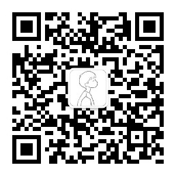

Andrew
一位热衷于探索前沿科技的爱好者，具备商业与市场营销方面的丰富经验，始终密切关注最新的技术趋势与发展。在这些领域积累了深厚经验，为综合性解决方案提供了独特且富有价值的视角。本网站托管于GitHub，本段文本和代码由ChatGPT生成，展现了技术与创意的结合。
An enthusiast passionate about exploring cutting-edge technology, with extensive experience in business and marketing, closely following the latest trends and developments in the field. With deep expertise accumulated in these areas, they provide a unique and valuable perspective for comprehensive solutions. This website is hosted on GitHub, and this text and code were generated by ChatGPT, demonstrating a fusion of technology and creativity.
如有任何咨询或合作机会，请随时通过电子邮件 info#hiwd.com 联系我.
For inquiries or collaboration opportunities, please feel free to contact me at info#hiwd.com.
欢迎访问 nqzn.net，也欢迎通过扫描下方的二维码关注微信公众号。
Welcome to nqzn.net, and feel free to follow the WeChat Official Account by scanning the QR code below.
